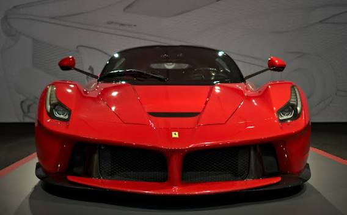
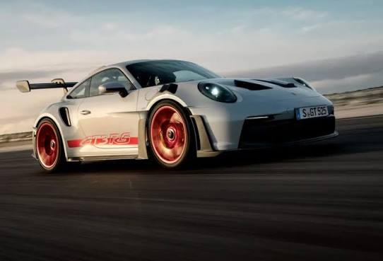
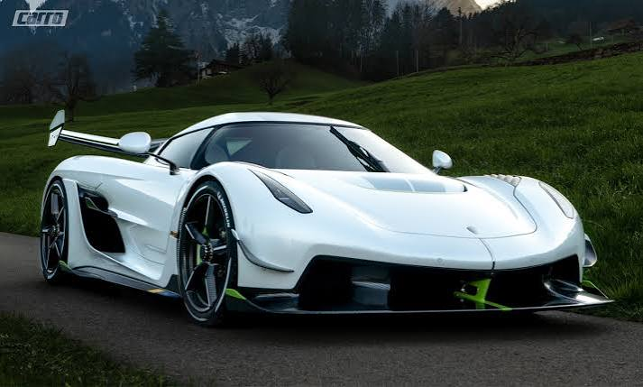
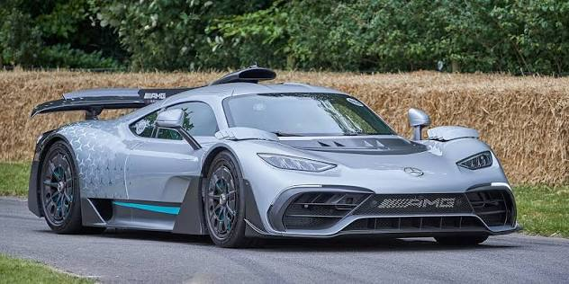

Conhessa carros de marcas famosas como Ferrari, Porsche, Koenigsegg e Mercedes-AMG, além de descobrir suas principais características, desempenho, tecnologias e curiosidades. “Os Carros Mais Extremos do Mundo” é, portanto, um espaço dedicado aos apaixonados por velocidade, tecnologia, luxo e engenharia automotiva, reunindo alguns dos carros mais exclusivos e impressionantes do planeta em um único lugar.

A Ferrari LaFerrari é um dos carros mais exclusivos e importantes da história da Ferrari. Produzida entre 2013 e 2018, foi o primeiro modelo híbrido de produção da marca e utiliza tecnologia derivada da Fórmula 1, osistema HY-KERS recupera energia durante frenagens e desacelerações e utiliza essa energia para auxiliar o motor V12. Isso melhora tanto o desempenho quanto a eficiência do carro. Foram produzidas apenas 499 unidades da versão cupê. Posteriormente, a Ferrari produziu 210 unidades da LaFerrari Aperta, versão conversível.

O Porsche 911 GT3 RS é uma das versões mais extremas do 911, desenvolvida principalmente para alto desempenho em pistas, mas homologada para uso nas ruas, o GT3 RS possui uma enorme asa traseira, entradas de ar e diversos elementos aerodinâmicos. Na geração 992, ele utiliza um sofisticado sistema de DRS (Drag Reduction System) e aerodinâmica ativa para aumentar o desempenho nas curvas, O GT3 RS não foi feito simplesmente para ser o 911 mais rápido em linha reta. Seu foco é fazer curvas extremamente rápido, utilizando baixo peso, suspensão preparada para pista, pneus de alta performance e enorme carga aerodinâmica.

O Koenigsegg Jesko é um hipercarro sueco desenvolvido pela Koenigsegg. Apresentado em 2019, foi criado para substituir o Agera RS e é um dos carros mais extremos já produzidos. Focado em pistas e curvas. Possui uma enorme asa traseira e gera uma quantidade impressionante de downforce. Projetado para velocidade máxima. Tem uma carroceria mais aerodinâmica e uma enorme redução no arrasto em comparação com o Attack. O V8 5.0 biturbo utiliza um virabrequim plano (flat-plane crankshaft) e pode chegar a 8.500 rpm. A transmissão LST também é extremamente rápida e foi desenvolvida especificamente pela Koenigsegg.

Mercedes-AMG ONE é um hipercarro da Mercedes-AMG inspirado diretamente na Fórmula 1. Seu grande diferencial é utilizar uma versão adaptada de um motor de F1, além de possuir quatro motores elétricos trabalhando junto ao V6, O carro possui aerodinâmica ativa, incluindo uma grande asa traseira, elementos móveis na carroceria e um sistema de redução de arrasto. Tudo foi pensado para gerar desempenho semelhante ao de um carro de competição. O AMG ONE foi desenvolvido para ser um carro de rua com tecnologia de Fórmula 1, mas isso também trouxe grandes desafios: o motor de 1,6 litro exige cuidados e manutenção muito mais específicos do que um motor convencional.
Veja mais.